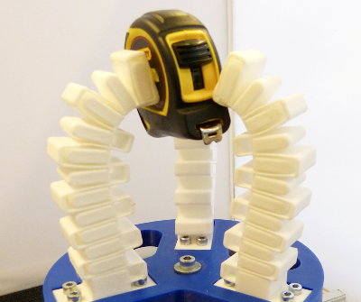

Reducing Out-of-Plane Deformation of Soft Robotic Actuators for Stable Grasping
IEEE International Conference on Soft Robotics (RoboSoft), 2019
| Rob B.N. Scharff, Jun Wu, Jo M.P. Geraedts, Charlie C. L. Wang |
| Department of Design Engineering, TU Delft |
| Department of Mechanical and Automation Engineering, The Chinese University of Hong Kong |

Abstract
For grasping (unknown) objects, soft pneumatic actuators are primarily designed to bend towards a specific direction. Due to the flexibility of material and structure, soft actuators are also prone to out-of-plane deformations including twisting and sidewards bending, especially if the loading is asymmetric. In this paper, we demonstrate the negative effects of out-of-plane deformation on grasping. A structural design is proposed to reduce this type of deformation and thus improve grasping stability. Comparisons are first performed on soft pneumatic actuators with the same bending stiffness but different resistances to out-of-plane deformation, which is realized by changing the cross-section of the inextensible layer. To reduce out-of-plane deformation, a stiffening structure inspired by spatial flexures is integrated into the soft actuator. The integrated design is 3D printed using a single material. Physical experiments have been conducted to verify the improved grasping stability.Download
 |
Paper MB |
Related Projects
Color-Based Proprioception of Soft Actuators Interacting with Objects
Bibtex
@article{Scharff2019RoboSoft,
title = "Reducing Out-of-Plane Deformation of Soft Robotic Actuators for Stable Grasping",
journal = "IEEE International Conference on Soft Robotics (RoboSoft)",
year = "2019",
pages = "265-270",
doi = "https://doi.org/10.1109/ROBOSOFT.2019.8722823",
author = "Rob B.N. Scharff and Jun Wu and J.M.P. Geraedts and Charlie C. L. Wang"
}